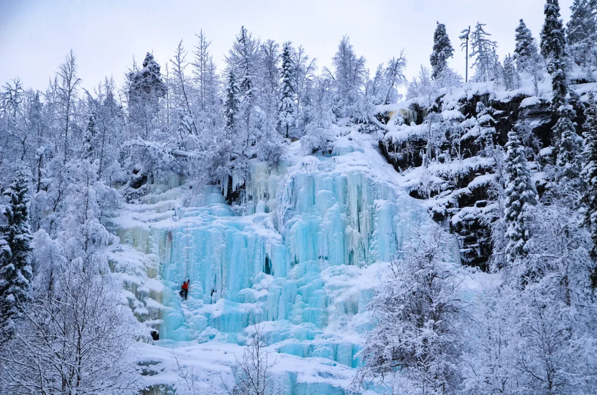
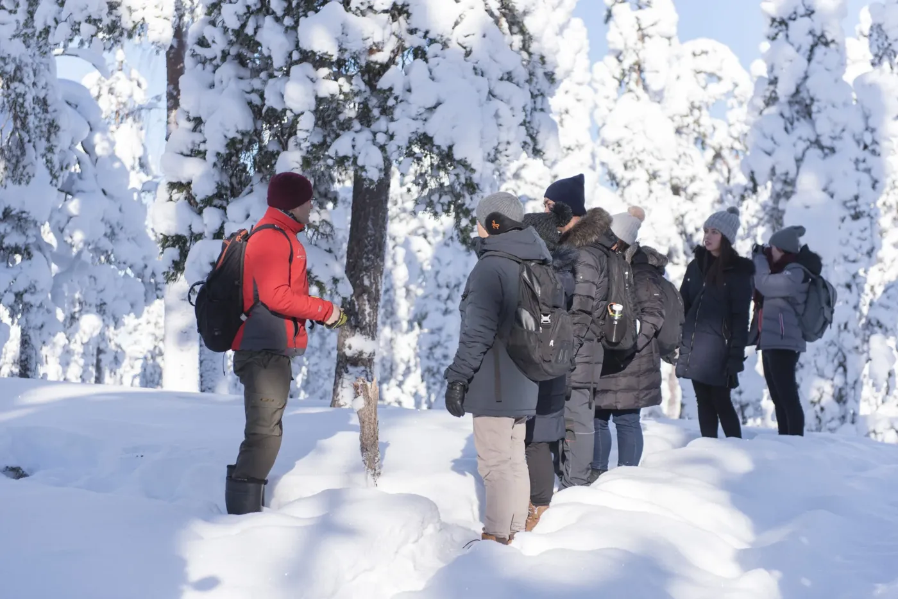
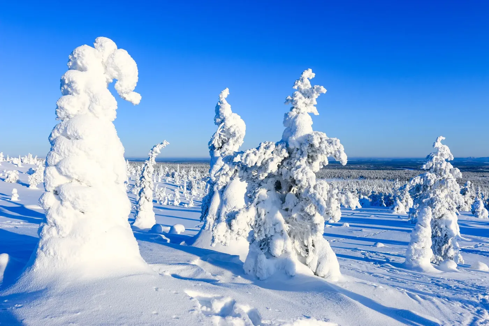
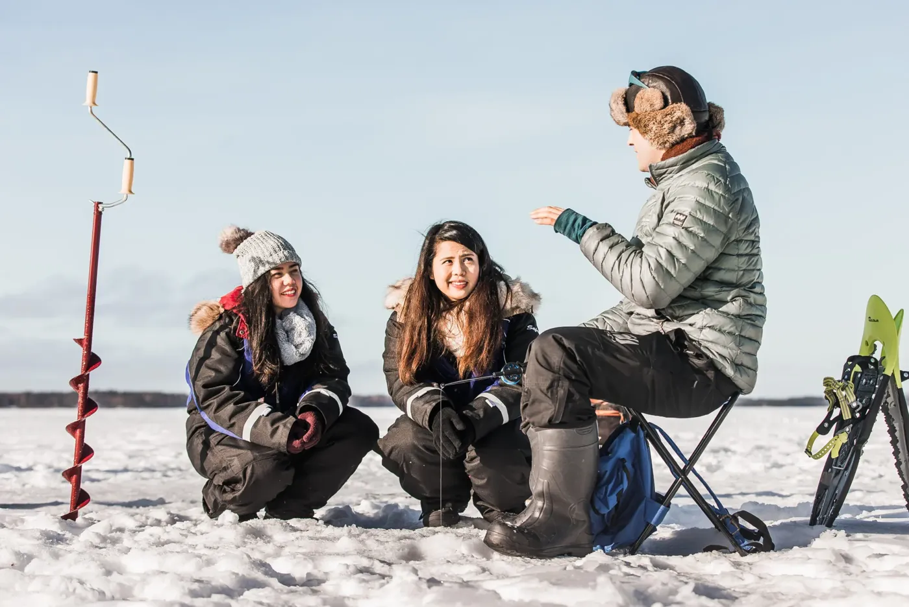
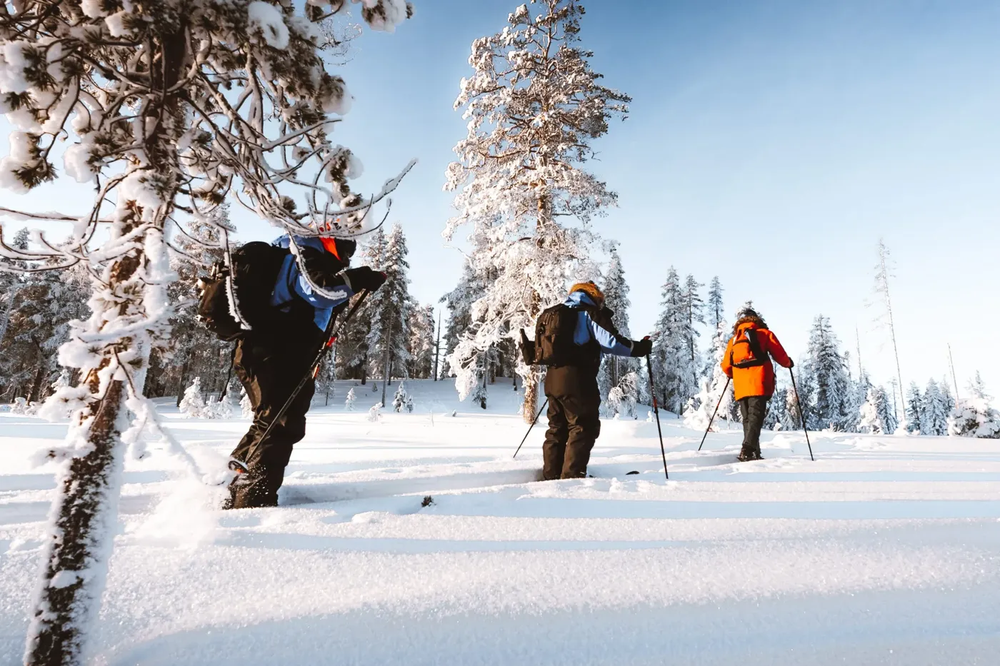
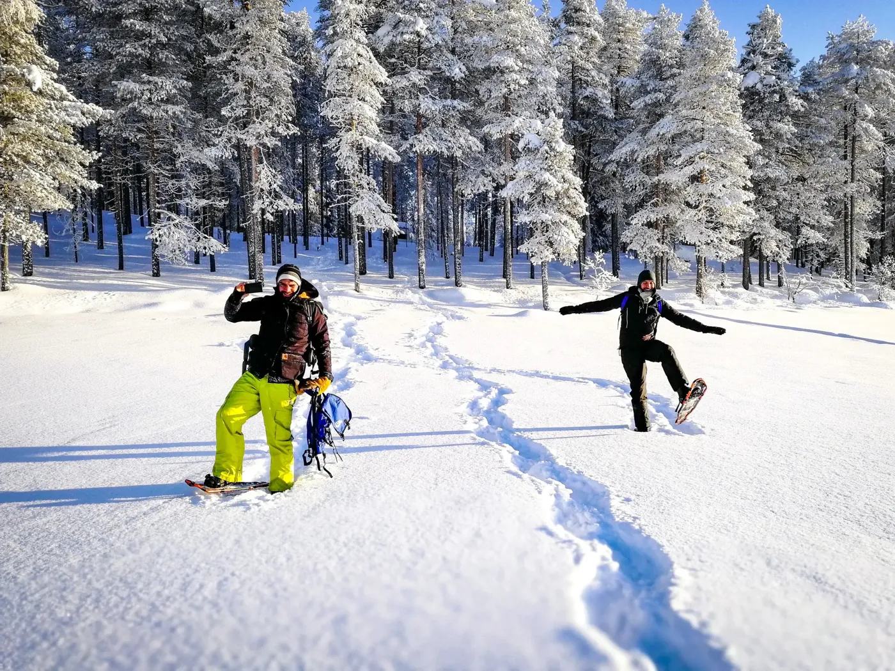
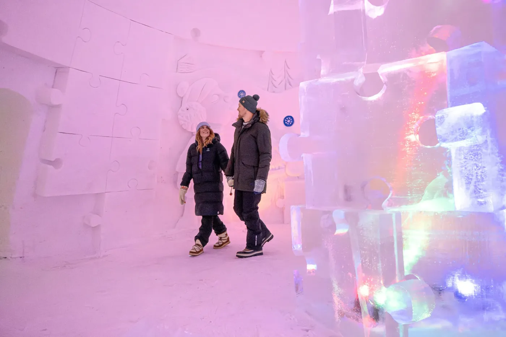
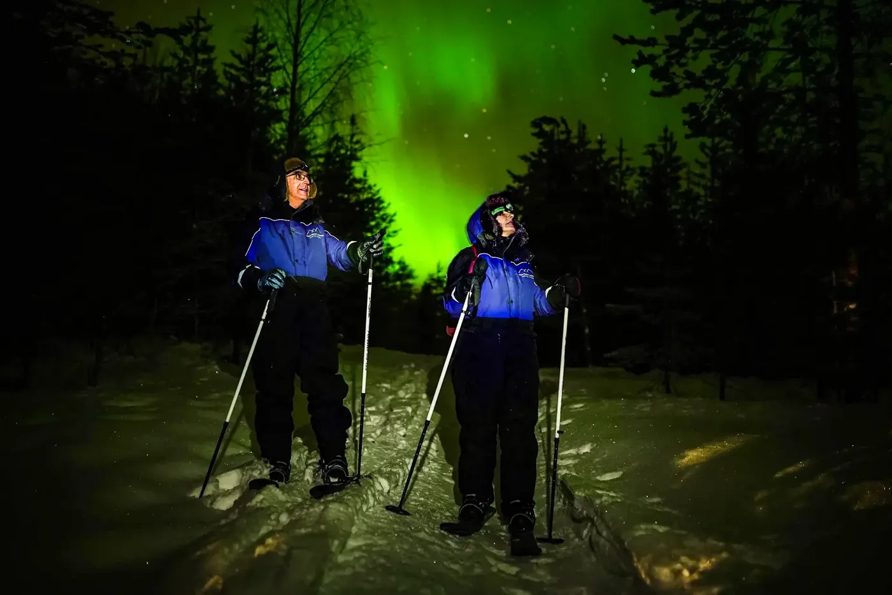

Frozen waterfalls of Korouoma Canyon
A full day hiking in Korouoma Canyon to see some of Europe’s most impressive frozen waterfalls, with lunch by the fire.
- About 7 hours, back 16:00–17:00
- Ages 8+
- Adults 15+ €155 · Children 8–14 €115
Day trips to Riisitunturi National Park and Korouoma Canyon, ice fishing, snowshoeing, backcountry skiing, a wilderness survival walk and a snow hotel visit. Tell us your dates and we check availability and book it for you.
Start building your trip
A full day hiking in Korouoma Canyon to see some of Europe’s most impressive frozen waterfalls, with lunch by the fire.
A gentler day out for families: a short hike in Korouoma Canyon, the Auttiköngäs waterfall and a BBQ lunch by the fire.

A guided walk in the snowy taiga to learn about the forest, animal tracks and basic survival skills, with a campfire snack.

A full day out to see the famous snow-crowned trees of Riisitunturi, with a guided hike and lunch by the fire.

Try a favourite local pastime on a quiet frozen lake north of the Arctic Circle, with a campfire snack on the shore.

Glide through deep snow in the taiga forest on easy backcountry skis, with a campfire break halfway.

A relaxed walk on snowshoes through old forest and up gentle hills, looking for animal tracks, with a campfire break.

Explore one of the world’s largest snow and ice hotels, then have lunch at a table made of ice.

An evening on backcountry skis in the wilderness, far from the city lights, with a campfire break along the way.
Prices are per person unless stated otherwise and include all taxes. Final prices and times come with your plan. Pickup and availability are confirmed when we reply.